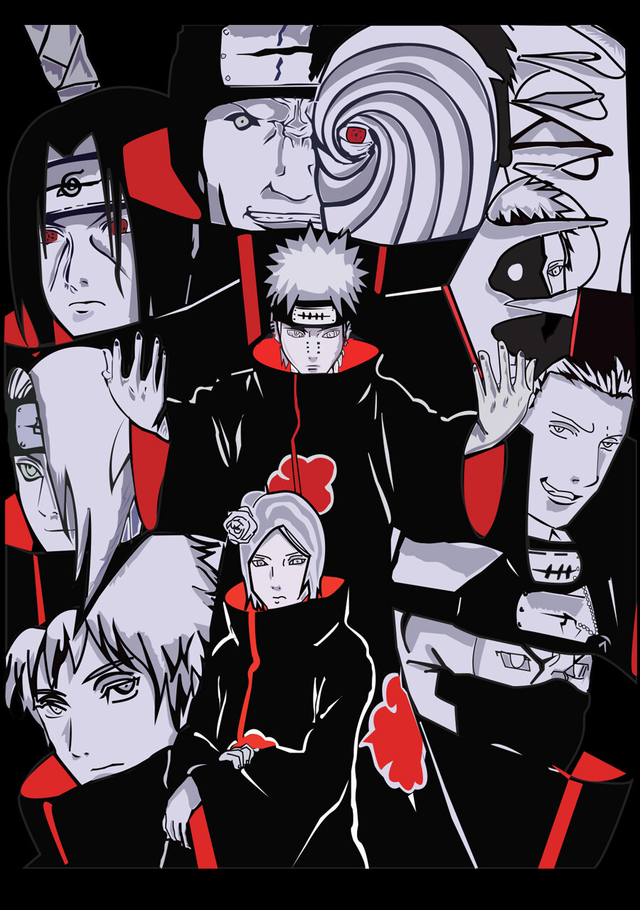

Akatsuki is a legendary organization from the Naruto series, known for its dark purpose, powerful rogue ninja members, and iconic black cloaks with red clouds. Originally founded to bring peace, Akatsuki later evolved into a dangerous group seeking to capture the Tailed Beasts and control the world through fear and power. Each member of Akatsuki is a formidable ninja with a tragic past and unique abilities. From the pain-driven leadership of Nagato (Pain) to the manipulative mastermind Obito Uchiha, Akatsuki shaped the fate of the shinobi world and stood as one of the most powerful threats in the Naruto saga. Symbolizing rebellion, ideology, and power, Akatsuki remains one of anime’s most unforgettable villain groups.
